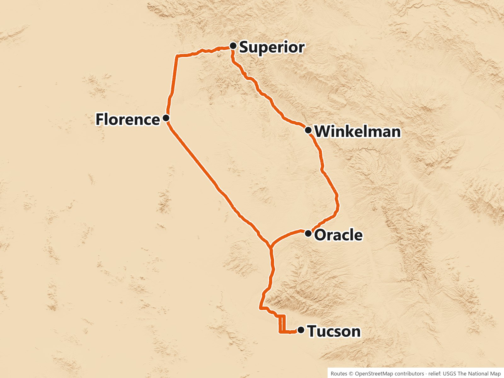
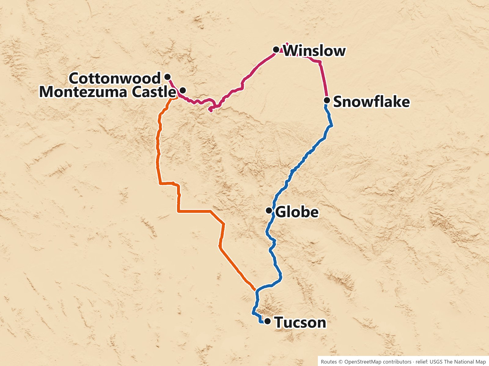
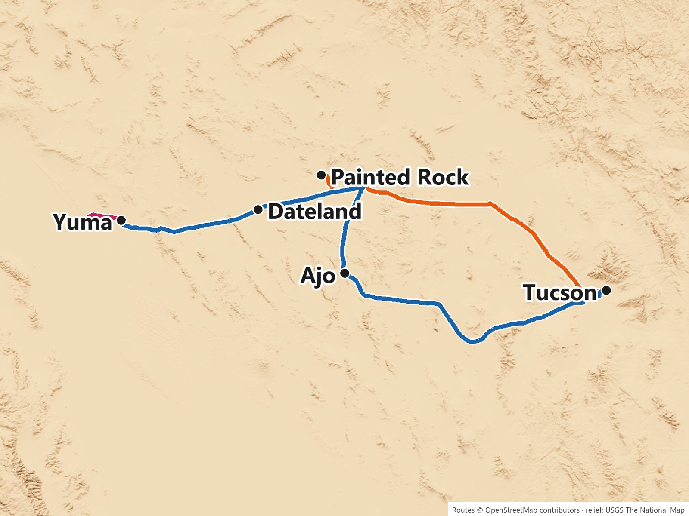
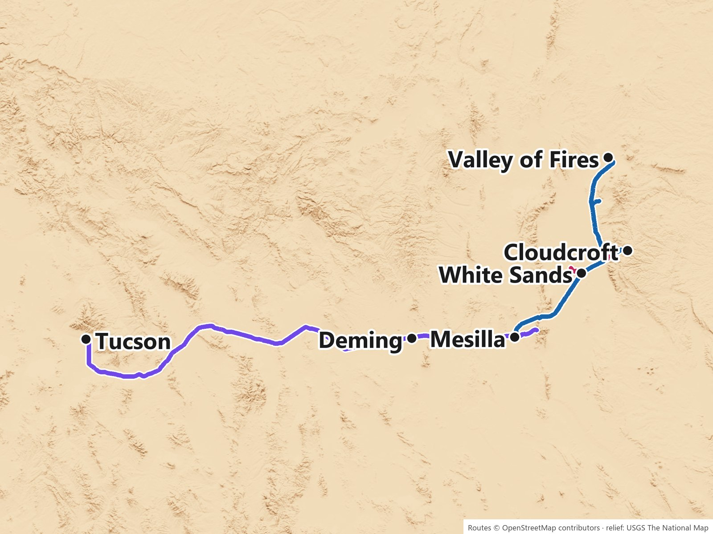
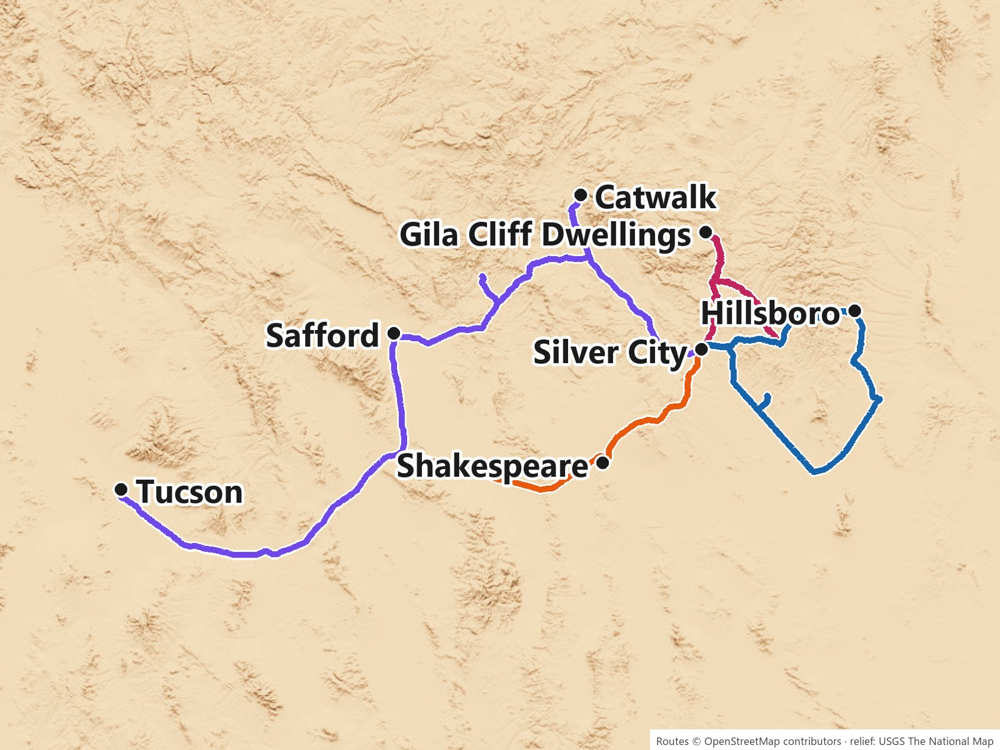

From Tucson
1 day

1 day · from Tucson
Copper & Cactus
Around the back of the Catalinas to copper country, a world of desert plants, and an old courthouse town.
- 🛣about 215 mi
- 🚗4½ h
- 📅October to April
2 days

2 days · 1 night · from Tucson
Mammoths & Mountain Canyons
A ranch from the 1870s, a canyon full of wildlife, a night in Bisbee, and the place where people hunted mammoths.
- 🛣about 250 mi
- 🚗2¼ to 3¼ h a day
- 📅fall to spring
3 days

3 days · 2 nights · from Tucson
Castles & Canyons
A castle in a cliff, pueblos on the plateau, pine country in between, and home through the Salt River Canyon.
- 🛣about 670 mi
- 🚗3¾ to 4¾ h a day
- 📅spring and fall

3 days · 2 nights · from Tucson
The Center of the World
Petroglyphs in the desert, all of human history carved in granite, a road of planks across the dunes, and a date shake.
- 🛣about 625 mi
- 🚗1¼ to 5¼ h a day
- 📅November to April
4 days

4 days · 3 nights · from Tucson
White Sands & Stone Footprints
White dunes, tracks 280 million years old, 21,000 carvings on one ridge, and a walk across a lava flow.
- 🛣about 910 mi
- 🚗2½ to 4¾ h a day
- 📅fall to spring

4 days · 3 nights · from Tucson
Caves, Copper & Calderas
Homes in a canyon cave, towns built on silver, a city of volcanic stone, and a walkway hung in a slot canyon.
- 🛣about 800 mi
- 🚗3¼ to 5½ h a day
- 📅spring and fall